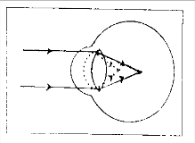

Refraction · Myopia
Types of axial myopia
Types of axial myopia
- Simple myopia:
- The commonest type.
- Starts approximately at the age of 14 years (at puberty) and progresses slowly till become stationary in the twenties.
- Rarely exceeds 6 diopters.
- Progressive (degenerative or malignant) myopia:
- Starts at the age of 5-10 years, progresses rapidly and continues to progress after the age of 25 years
- May reach 25 D or more.
- Usually accompanied by degenerative changes in the fundus.
- Congenital:
- Rarest type.
- Dated since birth and progresses rapidly to reach 10 D then becomes stationary for life.
- Rarely leads to complications.

Role of accommodation in myopia
As accommodation increases the refractive power of the lens and consequently the eye; it worsens myopia.